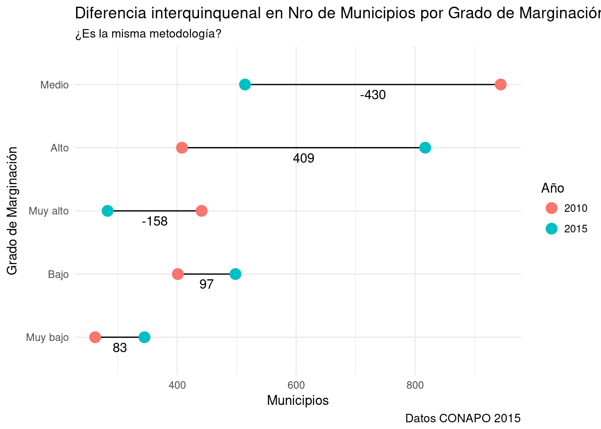
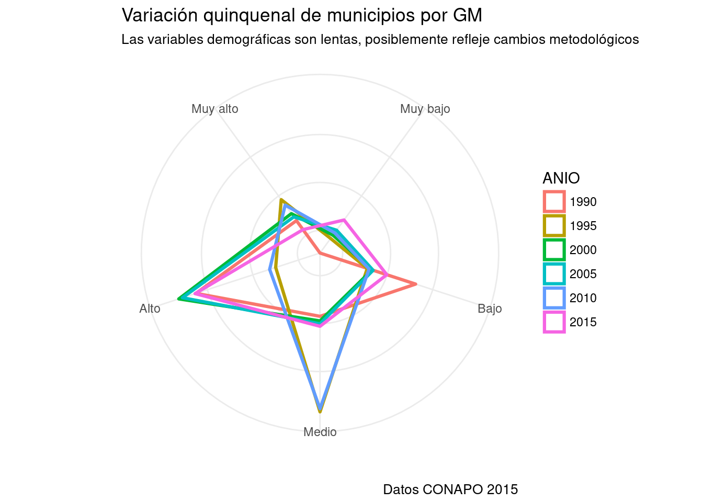

Capítulo 4 Gráficos con R y ggplot
library(tidyverse) #Muchas librerías en una: dplyr, ggplot, tibble, tidyr, readr, etc.
library (knitr) #Aquí por kable, para generar tablas formatedas.
library (Amelia) #Diagnóstico e imputación de casos perdidos. Cortesía de 1er K del KKV.
library (stringr) #Manipulación de cadenas de caracteres.
library(extrafont) #Tipografías personalizadas.
library(scales) #Para manipular escalas en ggplot.
library(ggrepel)
library(treemapify) #detools::install_github("wilkox/treemapify")
library(ggExtra)
library(GGally)
library(plotluck) #devtools::install_github("stefan-schroedl/plotluck")
library(readr)4.1 Acerca de este documento.
Este documento es una guía práctica para graficar en R usando las librerías dplyr:: para manipulación de datos y ggplot2:: para generar gráficos.
Quienes tengan interés en la manipulación de datos pueden leer la Guía práctica para manipulación de datos en R. Quienes prefieran utilizar la sintaxis de qplot() para hacer gráficos rápidos con una sintaxis simplificada pueden leer la Guía práctica de gráficos con qplot(), que también incluye algunos gráficos preconfigurados que facilitarán la exploración.
El objetivo de esta guía es familiarizar al lector con la lógica y la sintaxis de ambas librerías, de modo que puedan utilizarlas para explorar datos y comunicar resultados de investigación a través de visualizaciones.
Todos los ejemplos se presentan con la sintaxis completa para su ejecución y abundantes comentarios explicando que hace cada línea. Los comentarios al código están antecedidos por el símbolo #, como está especificado en R.
El código está en formato largo, es decir, cada función y los argumento de algunas funciones se presenta en una nueva línea, separada dos espacios del margen o alineada con el paréntesis correspondiente.
4.2 La gramática de los gráficos.
4.2.1 Filosofía.
La gramática de los gráficos movernos del paradigma de los tipos de gráficos y centrarnos en los elmentos que constituyen un gráficos estadístico, tanto aquellos que son directamente visibles en el resultado final como aquelos que, sin bien no estan directamnete a la vista, configuran a los elementos visibles. Identificando claramente a los elementos podemos encadernalos y del mismo modo en que encadenamos palabras para producir oraciones podemos encadenar elementos para producir gráficos y comrpender gráficos.
| Elemento | Visible | Algunos… | |
|---|---|---|---|
| Geométricos | Sí | Son las marcas en el espacio que representan a los datos. | Puntos, líneas, polígonos, rectángulos |
| Mapeo de datos | No | Es la especificación de las series de datos controlan propiedades los elementos geométricos | x, y, color, relleno, forma |
| Transformación | No | Es la especificación de transformación de datos mapeados a datos representables en el espacio | Conteos, medias, errores típicos, modelos |
| Escala | Sí | Señalan la relación entre una serie numéricas –variable– y el lugar que los elementos geométricos ocupan en el espacio. | Ejes, marcas, etiquetas |
| Coordenadas | No | Controlan la proyección de una serie numérica al espacio bidimensional de un gráfico | Cartesianas, polares, ternarias, fijas |
| Anotaciones | Sí | Agregan información al gráfico en forma de texto, los produce directamente el usuar io | Título, subtítulo, viñeta. |
A partir de estos elementos podríamos definir a un gráfico de barras como aquel cuyos elementos geométricos son rectángulos, en el que está mapeada una variable categórica en el eje x, que crea una variable continua para el eje y a partir de una tranformación que reporta los conteos para cada categoría de esa variable, que tiene una escala discreta para el eje x y una continua en el eje y y se representa en un espacio cartesino.
4.3 La gramática de los gráficos aplicada en ggplot().
En la gramática de los gráficos tienen cinco componentes básicos a partir de los que podemos controlar prácticamente todos los aspectos de un gráfico. ggplot() los implementa en su sintaxis. Varias de los elementos se crean por defecto, por ejemplo a partir del mapeo de datos ggplot() crea la escala con sus marcas y etiquetas. En el caso de las coordenadas siempre toma por defecto un sistema cartesiano. En todos los casos podemos modificar posteriormente estos valores por defecto.
- Una especificación de mapeo a variables.
- Pueden remitir tanto a los ejes del gráfico (x, y)
- como a otras propiedades como colores, símbolos, tamaños, tipografías, tipos de líneas, etc.
- En
ggplot()se especifican con los argumentos pasados aaes().
- Un sistema de coordenadas.
- Controla la proyección de los datos numéricos al espacio.
- Por defecto
ggpplot()crea un sistema de coordenadas cartesiano con los ejes x y y, - Podemos cambiarlo a coordenadas polares, ternarias o proyecciones cartográficas.
- Se puede modificar agregando
+ coord_*, donde*es cualquier sistema de coordenados incluido enggplot()o sus extensiones.
- Una escala.
- Controla la relación entre la serie numérica que estamos representando y su representación en el espacio.
- Por defecto
ggplot()crea una escala natural para los ejes en el que estos extienden un poco más que las observaciones máximas y mínimas.- Por defecto
ggplot()ubica a los ejes en el 0 de la escala. - Podemos cambiar la escala a través de una transformación, por ejemplo, pasando de escala natural a logarítmica.
- Por defecto
- Por defecto
ggplot()crea marcas y etiquetas de escala en número cerrados (unidades, decenas, centenas, miles, etc. ), dependiendo del rango de nuestros datos.- Es posible cambiar la cantidad y ubicación de marcas y/o etiquetas de escala.
- Se puede modificar agregando
+ scale_*_°, donde*es el eje que vamos a modificar y°el tipo de escala que estamos usando: continua o discreta.
- Una transformación estadística.
- Controla la transformación necesaria de los datos para su representación.
- Por ejemplo, realiza los conteos de frecuencias para un gráfico de barras o un histograma.
- O transformaciones más complejas como las necesarias para un boxplot.
- No aplica a todos los gráficos y existe la posibilidad de hacerla nosotros mismos y pasar los datos transformados a
ggplot(). - Se puede modificar con el argumento
stat= "*", donde*es la transformación que queremos realizar.stat = identitypara no hacer ninguna transformación y lo usamos cuando la provee el usuario.
- Controla la transformación necesaria de los datos para su representación.
- Un elemento geométrico.
- Es el elemento que representa a los datos en el gráfico.
- Podemos utilizar diferentes elementos para representar los mismos datos.
- O combinar varios en un mismo gráfico.
- Etiquetas completas.
ggplot()toma de las variables nombres para los ejes y etiquetas para las escalas (discretas o continuas)- De los mapeos adicionales (es decir, aquellos que no remiten directamente a los ejes) las etiquetas de leyendas.
- Anotaciones.
- Títulos, subtítulos, viñetas y cualquier otra anotación que querramos incluir será intoducida directamente por el usuario.
4.4 La base de datos.
4.4.1 Índice de marginación por municipios 1990-2015.
Todos los ejemplos se llevan a cabo con la base de datos del Índice de Marginación elaborado por CONAPO, desagregada a nivel municipal.
Base de datos en formato csv: http://www.conapo.gob.mx/work/models/CONAPO/Marginacion/Datos_Abiertos/Municipio/Base_Indice_de_marginacion_municipal_90-15.csv
Diccionario de variables en formato csv: http://www.conapo.gob.mx/work/models/CONAPO/Marginacion/Datos_Abiertos/Localidad/Diccionario_marginacion_localidad_95-10.csv
Metodología: http://www.conapo.gob.mx/work/models/CONAPO/Resource/1755/1/images/IAM_05Anexo.pdf
##Carga de los datos.
base_dura <- read_csv("datos/Base_Indice_de_marginacion_municipal_90-15.csv",
col_types = cols(AÑO = col_character(),
CVE_ENT = col_character(),
CVE_MUN = col_character(),
IM = col_double(),
IND0A100 = col_double(),
LUGAR_EST = col_integer(),
LUG_NAC = col_integer(),
OVPT = col_double(),
OVSAE = col_double(),
OVSD = col_double(),
OVSDE = col_double(),
OVSDSE = col_double(),
OVSEE = col_double(),
`PL<5000` = col_double(),
PO2SM = col_double(),
SPRIM = col_double(),
VHAC = col_double(),
VP = col_integer()))## Warning in rbind(names(probs), probs_f): number of columns of result is not
## a multiple of vector length (arg 1)## Warning: 70750 parsing failures.
## row # A tibble: 5 x 5 col row col expected actual file expected <int> <chr> <chr> <chr> <chr> actual 1 1 VP an integer - 'datos/Base_Indice_de_marginacion_muni… file 2 1 OVSD a double - 'datos/Base_Indice_de_marginacion_muni… row 3 1 OVSDSE a double - 'datos/Base_Indice_de_marginacion_muni… col 4 1 IND0A100 a double - 'datos/Base_Indice_de_marginacion_muni… expected 5 2 VP an integer - 'datos/Base_Indice_de_marginacion_muni…
## ... ................. ... .......................................................................... ........ .......................................................................... ...... .......................................................................... .... .......................................................................... ... .......................................................................... ... .......................................................................... ........ ..........................................................................
## See problems(...) for more details.##Limpieza de la base con dplyr
4.5 Descripción rápida de la base de datos.
4.5.1 Nombres cortos y largos.
###Diagnóstico de casos perdidos.
- Algunas variables no fueron relevadas o calculadas en algunos años de la elaboración del índice.
- Sin embargo no hay casos perdidos al azar, sólo esos missing sistemáticos por cambios de metodología.
4.6 Gráfico básico.
- Para comenzar construiremos paso a paso un gráfico de barras.
- Usamos gráficos de barras para representar conteos de variables categóricas.
- Nunca los usamos para representar un estadístico descriptivo, ya que no nos dan una magnitud del error o de la precisión de la estimación. En ese caso usamos un boxplot en alguna de sus variedades o un gráfico de barras al que agregamos intervalos de confianza o márgenes de error.
4.6.1 Construcción de un gráfico de barras paso a paso.
- ggplot encadena pasos con el operador
+. - La sintaxis mínima para obtener un gráfico es
ggplot(datos, aes(x=variable_mapeada_en_eje_x, y=variable_mapeada_en_eje_y)) + geom_elementogeométrico
Veamos uno a uno:
ggplot()abre la llamada a la función.datoses el primer argumento que pasamos a función.- Debe ser un
data.framecon los datos que vamos a graficar. - Podemos explicitar que estos son los datos con
data=datos, aunque al ubicarlo en la primera posición la función los identifica como datos.
- Debe ser un
aes()son los mapeos de datos, en los que relacionamos a cada eje del gráfico con una serie de datos.- La sintaxis es
eje = columna, donde eje puede ser x o y y columna es el nombre de una columna en eldata.framedatos. - Aquí mismo podemos pasar otro tipo de mapeos:
color,shape,fill,size, etc, siempre controlados por una columna en eldatos. - Si pasamos un argumento de color, forma, relleno, etc. fuera de los paréntesis de
aes(), pero sin dentro de los deggplot()se lo considerará una constante y afectará a todos los elementos geométricos. Por ejemploggplot(datos, aes(x=categorías, y=conteos), fill="red")rellenará el elemento geométrico de color rojo.
- La sintaxis es
+encadena operaciones. Si no unimos las capas del gráfico con+R nos regresa un error de sintaxis.geom_*, donde el asterisco es el elemento geométrico que queremos utilizar para hacer visibles los datos. -geom_pointdibuja un punto en la intersección entre las coordenadas x y y. -geom_linedibuja una línea uniendo esos puntos. -geom_colcrea columnas desde el 0 del eje hasta la intersección de los ejes.
Diferentes elementos geométricos requieren de diferentes mapeos o producen diferentes resultados dependiendo del tipo de datos de la columna que les pasemos. La principal diferencia se da cuando pasamos un factor19 o un vector numérico. Algunos elementos geométricos traen implícita una transformación estadística que requiere algún tipo especial de variables o combinaciones variables. Por ejemplo, geom_bar implícitamente transforma una variable en conteos, por lo que acepta solamente factores. geom_boxplot calcula la media, cuartiles, rango intercuartiles, etc. de una variable numérica para cada categoría de un categórica, por que lo que regresa un error si le pasamos otro tipo de variables.
#### Gráfico de barras a partir de conteos manuales.
- En este caso capturamos manualmente los datos.
- Tienen que tener la estructura data.frame o equivalente (ejp. tibble)
- Una columna con las categorías, otra con los conteos.
- Usamos la función
tribble()que permite capturar los datos por columna. -Es muy conveniente para importar pocos datos que hemos tomado de una página web o de Excel. Seleccionamos y copiamos el rango de datos, los pegamos en el editor de texto y agregamos los nombres de colima antecedidos por~, separamos con comas y listo.20 No es un método recomendable para bases de datos grandes o con más de dos columnas.
tribble(
~GM, ~n,
"Muy alto", 283,
"Alto", 817,
"Medio", 514,
"Bajo", 498,
"Muy bajo", 345
) %>%
ggplot(aes(x=GM, y=n)) + # Abro la función y con `aes` mapeo GM al eje x y n al y. Automáticamente genera las escalas, etiquetas, etc. a partir de las propiedad de las variables.
geom_col () #Agrego el elemento geométrico columna. geom_col requiere mapeos en x y y.Tenemos un gráfico básico que tiene algunos errores que hay que corregir. Primero vamos ver otras dos maneras de generar gráficos de barras, después ir puliendo el gráfico hasta calidad publicación. Posteriormente vamos a agregar capas de información adicional.
4.6.1.1 Gráfico de barras a partir de conteos con dplyr.
- La función tally de dplyr genera estructuras data.frame con conteos. Primero seleccionamos y agrupamos los datos, después hacemos el conteo.
base_marginacion %>%
filter(AÑO=="2015" & ENT!="Nacional") %>% #Filtra sólo el año 2015 y excluyo el valor Nacional.
group_by(GM) %>% #Genera un grupo de observaciones por cada categoría de la variable GM.
tally # Realiza el conteo y lo muestra. ## # A tibble: 5 x 2
## GM n
## <chr> <int>
## 1 Alto 817
## 2 Bajo 498
## 3 Medio 514
## 4 Muy alto 283
## 5 Muy bajo 345base_marginacion %>% filter(AÑO=="2015" & ENT!="Nacional") %>% group_by(GM) %>% tally %>% #Recreo el conteo, pues el anterior fue a consoloa y desapareció para R.
ggplot(aes(x=GM, y=n)) + #n es la columna con los conteos.
geom_col()
(#fig:barra_tally)Municipios por Grado de Marginación a nivel nacional
4.6.1.2 Gráfico de barras con conteos automáticos.
4.7 Personalización de gráfico.
- El gráfico que hemos realizado tiene la información básica, sin embargo no está prolijo y le faltan elementos importantes. Los mejoraremos paso a paso.
4.7.1 Orden manual de las categorías.
En el gráfico anterior las categorías de la variable GM están ordenadas según el alfabeto, tal como R procesa a una cadena de caracteres al convertirla a factor. En este caso dificulta la lectura del gráfico, pues no tiene el orden natural que va de Muy alto a Muy bajo o el orden decreciente por conteos.
ggplot()no tiene un método interno para reordenar categorías, retoma el orden del tipo de datosfactorde R.forcats::fct_relevelpermite reordenar manualmente categorías directamente en las estructura de datos y de ese modo pasar ese orden aggplot().- Podemos poner en práctica la programación funcional llamando a la función directamente en el mapeado
aesdeggplot(). De este modo no se alteraran los datos originales y se evitan efectos colaterales.
- Podemos poner en práctica la programación funcional llamando a la función directamente en el mapeado
base_marginacion %>%
filter(AÑO=="2015" & ENT!="Nacional") %>% count(GM) %>% #Genera conteos
ggplot(aes(x=fct_relevel(GM, "Muy alto", "Alto", "Medio", "Bajo", "Muy bajo"), #Mapeo x al output fct_relevel.
y=n)) + #La otra variable no se ve afectada.
geom_col() -> g #Asigno el nombre "g" a esta salida Puedo modificarla más adelante.
print(g) #Invoco explícitamente print() para hacerlo visible. 4.7.2 Orden automático de categorías.
Otra posibilidad es reordenar las categorías de x por su frecuencia.
forcats::fct_reorderreordena a partir de una variable numérica. En este caso serviría para reordenar categorías de la variable GM de menor a mayor frecuencia.
4.7.3 Título, subtítulo, títulos de ejes, viñeta
- Un gráfico siempre debe llevar rótulos que hagan explícito que están presentando y como.
- El elemento
labs()permite incluir fácilmente todas las etiquetas necesarias. - Argumentos que acepta
labs():
| Argumento | Elemento del gráfico |
|---|---|
| title | Título |
| subtitle | Subtítulo |
| caption | Viñeta |
| x | Nombre del eje x |
| y | Nombre del eje y |
| fill | Nombre de la leyenda de códigos de colores creados con fill= |
| color | Nombre de la leyenda de códigos de colores creados con color= |
| shape | Nombre de la leyenda de simbología creada con shape= |
g + labs (title= "La mayoría de los municipios tienen un grado de marginación alto",
subtitle="Pero Muy alto son una minoría",
x="Grado de Marginación",
y="Frecuencia absoluta",
caption= "Datos CONAPO para 2015"
) -> g #Asigno el nombre "g" al gráfico con etiquetas.
print (g)
4.7.4 Estilos visuales.
- la función
theme()deggplot2::nos permite cambiar el aspecto visual de los gráficos. - La forma más fácil de usarla es seleccionando alguno de los estilos visuales disponibles.
- Nótese que las opciones de
theme()no afectan a los elementos del gráfico que representan datos. En este caso no cambian los colores, ancho u otro atributo de las barras. Esos atributos se pueden cambiar solamente si los mapeamos a datos. - Esto puede ser frustrante, pero es una excelente manera de preservar la integridad de la representación.
A continuación se presentan algunos de ellos aplicados al gráfico g.
theme_grey() El estilo visual por default de ggplot2.
- Fondo gris, ejes implícitos, líneas de escala blancas. Recomendado para presentaciones.
theme_classic() asemeja al estilo de los gráficos R Base.
- Fondo blanco, ejes explícitos, marcas de escala sobre los ejes, sin líneas de guía.
###theme_minimal() es un estilo que produce gráficos elegantes y legibles para impresión.
- Fondo blanco, ejes implícitos, líneas de guía escala grises.
4.8 Gráficos intermedios (más de una serie de datos)
- ggplot() ofrece varias maneras de incorporar múltiples series de datos en un mismo gráfico. Estas dependerán del tipo de gráfico que estemos usando. Por ahora seguiremos usando el gráfico de barras básico al que agregaremos la variable AÑO para comparar la evolución quinquenal del número municipios por GM.
- Es importante tener en cuenta que para graficar más de una serie de datos estos deben estar en formato largo.
4.8.1 Datos Formato de datos largo y ancho.
- Para gráficos con más de una serie es conveniente tener los datos en formato largo.
- De ese modo
ggplot()puede agruparlos fácilmente.- Internamente hace algo similar a la función
filter()dedplyr::
- Internamente hace algo similar a la función
- Para R la estructura es la misma,
data.frame, pero cambia la forma en que organizamos la información. - En formato ancho la información de interés está organizada por columnas.
- El nombre de columna señala la serie y en cada fila se guarda un valor.
- En formato largo el valor está en una columna aparte y hay una columna clave en la que se repite en las filas a que variable corresponde ese dato.
- Se lo conoce como formato key paired o empatado por claves.
- Duplica el largo de la estructura de datos, porque hay dos filas donde antes había dos columnas.
dplyr::generalmente produce datos en formato largo.tidyr::gather()pasa de formato ancho a largo.tidyr::spread()pasa de formato largo a ancho.
- De ese modo
base_marginacion %>%
mutate(ANIO=AÑO) %>% #PQ dplyr a veces tiene problemas con la ñ
filter (ANIO %in% c("2015", "2010") & ENT!="Nacional") %>% # %in% busca equivalencias en un vector.
group_by (GM, ANIO) %>% #Doble agrupamiento. Genera formato de datos largo.
tally -> data ##Guardo el conteo como data para graficar después##
kable (data, caption="Formato largo. Categoría, grupo, valor")| GM | ANIO | n |
|---|---|---|
| Alto | 2010 | 408 |
| Alto | 2015 | 817 |
| Bajo | 2010 | 401 |
| Bajo | 2015 | 498 |
| Medio | 2010 | 944 |
| Medio | 2015 | 514 |
| Muy alto | 2010 | 441 |
| Muy alto | 2015 | 283 |
| Muy bajo | 2010 | 262 |
| Muy bajo | 2015 | 345 |
| GM | 2010 | 2015 |
|---|---|---|
| Alto | 408 | 817 |
| Bajo | 401 | 498 |
| Medio | 944 | 514 |
| Muy alto | 441 | 283 |
| Muy bajo | 262 | 345 |
4.8.2 Gráfico de barras lado a lado.
- Este gráfico presenta dos series de datos usando un código de color.
- En este caso es el color que rellena las barras, lo mapeamos con
fill=. - ggplot() usa los colores de una paleta por default.
- Podemos personalizar la paleta de colores.
- En este caso es el color que rellena las barras, lo mapeamos con
#Primero asigno a las etiquetas el nombre etiquetas, así las puedo incluir con + etiquetas.
etiquetas <-
labs (title= "2010-2015 ¿retroceso?", subtitle="O foco en los municipios de mayor marginación", x="Grado de Marginación", y="Frecuencia absoluta", caption= "Datos CONAPO para 2015")
ggplot (data, aes(x=GM, y=n, fill=ANIO)) +
geom_col(position = "dodge") + #Position="dodge" Barras lado a lado. Por defecto barras apiladas.
etiquetas + #Etiquetas completas, también se pueden especificar a mano.
labs(fill="Año") #Agrego la leyenda de colores (`fill=`), se suma a + etiquetas
4.8.3 Gráficos multipanel.
- Los gráficos multipanel dividen un gráfico en varios subgráficos, presentando una serie en cada uno. Simplifican gráficos muy complejos (este no lo es) y funcionan bien sin colores. Al estar todos los paneles en la misma escala es posible compararlos.
- En
ggplot2::el elementofacet_wrap()nos permite señalar la variable de agrupamiento, cada categoría de esa variable será un panel.- Antecedemos al nombre de la variable con
~. Porque sí. ncol=nos permite especificar la cantidad de columnas de paneles.
- Antecedemos al nombre de la variable con
data %>%
ggplot (aes(x=fct_relevel(GM, "Muy alto", "Alto", "Medio", "Bajo", "Muy bajo"), y=n)) +
facet_wrap(~ANIO, ncol=2) + #~ANIO: variable de agrupamiento. ncol= 2columnas.
geom_col() +
etiquetas +
theme_minimal()
4.8.4 Gráfico de punto.
- Los gráficos de puntos expresan la misma información uno de barras, pero utilizan un elemento geométrico diferente.
- Usan puntos en lugar barras.
- Es convención poner a las categorías de la variable en el eje y y las frecuencias en el eje x.
- Y ordenarlas por frecuencia de mayor a menor.
4.8.5 Gráfico de punto y línea.
- Para enfatizar la variación interanual podemos dibujar una recta que una ambos puntos.
- Agregar etiquetas con el número de la variación.
- Ordenar las categorías de la variable por orden de variación.
- Es necesario desdoblar la estructura de datos,
- una en formato ancho para definir las coordenadas de los puntos de la recta y calcular la diferencia interquinquenal.
- otra en formato largo para marcar los puntos mapeados a
color=
- Usamos
geom_segment()para dibujar las rectas, este toma 4 argumentos: x, xend, y, yend. - Usamos
geom_text()para ubicar sobre cada recta la magnitud de variación.
data <-
data %>%
spread(ANIO, n) %>% #Paso a formato ancho, crea una columna por año.
mutate(dif=`2015`-`2010`) %>% #Calculo la diferencia interquinquenal.
ungroup %>%
mutate(GM=fct_reorder(GM, abs(dif))) #Ordeno las categorías por diferencia absoluta.
data2 <- data %>% select (-dif) %>% gather(., key, value, -GM) #Recreo los datos en formato largo para poder el argumento color.
ggplot (data, aes(y=GM)) +
geom_segment(aes(y=GM, yend=GM, x=`2010`, xend=`2015`)) + #Línea
geom_text(aes(y=GM, x=(`2010`+`2015`)/2, label= dif, vjust=1.5)) + #Etiqueta variación.
geom_point(data=data2, aes(y=GM, x=value, color=key), size=4) + #Puntos con valores quinquenales.
labs(title="Diferencia interquinquenal en Nro de Municipios por Grado de Marginación", subtitle="¿Es la misma metodología?", caption="Datos CONAPO 2015", x="Municipios", y="Grado de Marginación", color="Año") +
theme_minimal()
4.8.6 Gráfico de dispersión.
- Los gráficos de dispersión muestran las relaciones entre dos variables continuas.
- Por ejemplo, podemos explorar la relación entre la cantidad de habitantes de un municipio y su índice de marginación.
g <- base_marginacion %>%
filter (AÑO=="2015" & ENT!="Nacional") %>%
ggplot(aes(x=POB_TOT, y=IM)) + #Mapeo x y y.
geom_point() #Un punto en cada intersección de x y y.
print (g)
4.8.7 Gráfico de dispersión en paneles.
- Para explorar la relación entre dos variables en diferentes contextos podemos usar paneles.
- Y graficar la dispersión para cada categoría de una tercera variable.
- En este caso, la relación entre población y marginación en cada Entidad Federativa.
base_marginacion %>%
filter (AÑO=="2015" & ENT!="Nacional") %>%
ggplot(aes(x=POB_TOT, y=IM)) +
facet_wrap(~ENT, nrow=8) +
geom_point() +
theme_minimal() +
labs(title="El Indice de Marginación baja a medida que sube el número de habitantes", subtitle="outliners interesantes", x="Población del Municipio", y= "Índice de marginación", caption="Datos CONAPO 2015") +
theme_minimal()- O en cada quinquenio relevado.
base_marginacion %>%
filter (ENT!="Nacional") %>%
ggplot(aes(x=POB_TOT, y=IM)) +
facet_wrap(~AÑO, ncol=2) +
geom_point() +
theme_minimal() +
labs(title="El Indice de Marginación baja a medida que sube el número de habitantes", subtitle="Urbanización", x="Población del Municipio", y= "Índice de marginación", caption="Datos CONAPO 2015") +
theme_minimal()## Warning: Removed 1 rows containing missing values (geom_point).4.8.8 Gráfico de caja.
- Los gráficos de caja o boxplot son muy apropiados para ver cómo varía una variable continua en relación a una categórica. A diferencia de un gráfico que sólo nos muestra una una estimación puntual (como un gráfico de barras de medias o medianas) un boxplot nos da simultáneamente información sobre la estimación, la dispersión y la presencia de casos extremos.
- Un en gráfico de caso estándar:
- Una línea horizontal señala la mediana.
- La caja la extensión entre los cuartiles 1 y 3.
- Los “bigotes” cubren una vez y media el rango intercuartil, 1.5 veces el largo de la caja.
- Los puntos por encima o por debajo de los bigotes marcan valores atípicos o outliers.
- En
ggplot2::el elemento geométricogeom_boxplot()ystat=boxplottrabajan en conjunto para hacer todas las transformaciones y graficar los elementos geométricos.- Mapeamos una x categórica y una y continua a
geom_boxploty obtenemos el gráfico estándar. - Si queremos emplear el elemento geométrico boxplot, pero utilizar estadísticos diferentes (ejp. la media y los dos primeros desvíos), podemos pasar los argumentos
ymin,lower,middle,upperyymaxen el mapeoaes`.
- Mapeamos una x categórica y una y continua a
4.8.8.1 Gráfico de caja estandar
base_marginacion %>%
filter (AÑO=="2015" & ENT!="Nacional") %>%
ggplot(aes(x=ENT, y=POB_TOT)) + #Mapeo una categórica y una contínua.
geom_boxplot() + #Agrego el elemento geométrico.
labs(title="La mayoría de los municipios de México tienen poca población",
subtitle="Muchos casos atípicos: Municipios urbanos muy poblados",
x="Entidad Federativa",
y="Población por municipio",
caption="Datos CONAPO 2015") +
theme_minimal() +
theme(axis.text.x = element_text(angle = 90, #Roto 90° las etiquetas del eje x
size = 6, # Reduzco el tamaño a 6 puntos
color="blue") #Cambio el color del texto a azul
) 4.8.8.2 Gráfico de caja con estadísticos personalizados
base_marginacion %>%
filter (AÑO=="2015" & ENT!="Nacional") %>%
group_by(ENT) %>%
dplyr::summarise (media=mean(POB_TOT), #Obtengo la media por ENT
desvio=sd(POB_TOT)) %>% #Y el desvío estándar
ggplot(aes(x=fct_reorder(ENT, media), #Mapeo x categórica reordenada por media.
ymin = media-desvio*2, #Bigote bajo: 2sigma
lower = media-desvio, #Caja baja: 1sigma
middle = media, #Centro: media
upper = media+desvio, #Caja alta: 1sigma
ymax = media+desvio*2)) + #Bigote alto: 2 sigma
geom_boxplot(stat= "identity") + #stat="identity" para datos personalizados.
coord_flip () + #Roto los ejes para hacer visibles las etiquetas.
labs(title="Baja California y Distrito Federal tienen casi toda su población en municipios muy poblados",
y= (expression(mu*~sigma*~2*sigma)), #Uso la función expression para insertar letras griegas.
x="Entidad federativa") 4.8.8.3 Gráfico de violín
- Otra alternativa para graficar una variable continua en las diferentes categorías de una variable categórica es el gráfico de violín.
- Este genera una figura con la densidad de frecuencia a lo largo de la escala.
- Es similar a generar una curva de densidad para cada categoría, pero lo hace en dos direcciones.
base_marginacion %>%
filter (AÑO=="2015" & ENT %in%
c("Guerrero", "Distrito Federal", "Veracruz de Ignacio de la Llave", "Baja California", "Tlaxcala",
"Oaxaca", "Tamaulipas")) %>% #Selecciono algunas Entidades.
mutate(ENT=str_wrap(ENT, 15)) %>% #Ajusto el ancho de los nombres de las categorías, inserta un salto de línea cada 15 caracteres.
ggplot(aes(x=ENT, y=IM)) + #Mapeo x categórica y y continua.
geom_violin(fill="chartreuse4") + #Relleno el violín con un color verde.
labs(title="Las Entidades con menos marginación son menos desiguales",
x="Entidad Federativa",
y="Índice de marginación",
caption="Datos CONAPO 2015") +
theme_minimal() +
theme(plot.title = element_text(size=11, #Reduzco el tamaño del título a 11 puntos.
face="italic") #Y cambio la fuente a itálica.
) 4.9 Personalización avanzada de gráficos.
- Hasta ahora hemos trabajado con los estilos visuales predefinidos de ggplot. Sin embargo cambiando las propiedades de un estilo podemos personalizar prácticamente todos los elementos estéticos de un gráfico, es decir, aquellos en los que no se están mapeando datos.
ggplot2separa completamente la estética del gráfico de la representación de datos. Por lo tanto cambiando el estilo no podemos:- Cambiar los colores, tipografías, simbología o cualquier propiedad de los elementos geométricos.
- Cambiar las escalas.
- Cambiar los proporciones del gráfico.
- Sin embargo podemos cambiar:
- El tamaño, tipografía, color, orientación, ubicación de los elementos no de datos como etiquetas, leyendas, títulos, marcas de escalas, etc.
4.9.1 Etiquetas y elementos de texto.
- Un problema frecuente es que las etiquetas de los ejes se superponen y no son visibles. Esto es usual cuando las etiquetas son largas, por ejemplo, estamos usando como etiqueta una pregunta tal cuál fue formulada en un encuesta. Hay varias estrategias para solucionar este problema. Si estamos utilizando algún estilo visual (theme) debemos hacer los cambios después de aplicar el tema. De lo contrario las especificaciones del estilo tendrá prioridad y sobrescribirán nuestro cambio.
- Problemas y soluciones frecuentes.
- Cambiar la orientación de las etiquetas. Al rotarlas 90 o 45° aumentamos la legibilidad.
- Esto lo hacemos ajustando el elemento texto de cada eje. Ver ejemplo en Gráfico de caja estandar
- Por defecto el texto a 0 grados, es decir, paralelo al eje x. Podemos cambiar cualquier ángulo entre 0 y 360.
- Cambiar la orientación del gráfico. Al rotar los ejes podemos poner las etiquetas largas en el eje y, donde tendrán más espacio.
- Esto lo hacemos cambiando rotando las coordenadas con
+ coord_flip. Ver ejemplo en Gráfico de caja con estadísticos personalizados - En algunos casos podemos lograr el mismo efecto cambiando el mapeado de los ejes x y y, pero no siempre es así.
- Esto lo hacemos cambiando rotando las coordenadas con
- Reducir el tamaño de la tipografía.
- Esto lo hacemos cambiando el elemento texto de los ejes. Ver ejemplo Gráfico de caja estandar
- Cambiando ese elemento también podemos cambiar el font face, color,
- Agregar saltos de línea para obtener bloques de texto más cortos en varias líneas.
- Esto lo hacemos haciendo el ajuste de línea previamente con la función
stringr::str_wrap(). Ver ejemplo en Gráfico de violín - Es recomendable agregar los saltos de líneas antes de pasar los datos a
ggplot(), tipicamente con la funcióndplyr::mutate(). - También podemos agregar saltos de línea manuales con
\ndentro de una cadena de caracteres.
- Esto lo hacemos haciendo el ajuste de línea previamente con la función
- Cambiar la orientación de las etiquetas. Al rotarlas 90 o 45° aumentamos la legibilidad.
4.9.2 Ajuste del elemento texto.
- Dentro de los estilos visuales de
ggplot()la claseelement_textnos permite ajustar las propiedades de texto.- Primero debemos ubicar la parte del gráfico que queremos modificar. A continuación se listan algunas de uso frecuente.
4.9.2.1 Elementos con texto de un gráfico de ggplot.
| Elemento del tema | Afecta a |
|---|---|
theme(axis.title = element_text () ) |
Los nombres de ambos ejes |
theme(axis.title.x = element_text ()) |
Los nombres del eje x |
theme(axis.title.y =element_text ()) |
Los nombres del eje y |
theme(axis.text = element_text ()) |
Las etiquetas de ambos ejes |
theme(axis.text.x = element_text ()) |
Las etiquetas del eje x |
theme(axis.text.y = element_text ()) |
Las etiquetas del eje y |
theme(plot.title = element_text ()) |
El título del gráfico |
theme(plot.subtitle = element_text ()) |
El subtítulo del gráfico |
theme(plot.caption = element_text ()) |
La viñeta del gráfico |
- Luego después del signo
=debemos señalar que queremos cambiar el elemento texto conelement_text()y pasar alguno de los siguientes argumentos:
| Argumento | Cambia… | Ejemplo |
|---|---|---|
| family | La fuente | family = “sans” |
| face | Tipo de letra | face = “italic” |
| color | Color de letra | color = “green”21 |
| hjust | Alineación horizontal | hjust = -1 |
| vjust | Alineación vertical | vjust = 0.1 |
| angle | Ángulo del texto en ° | angle = 90 |
- La sintaxis para modificar el subtítulo del gráfico a fuente Times New Roman, itálica, verde, alineado 1 punto a la izquierda, 0.1 punto más arriba y rotado 90° es:
+ plot.subtitle(element_text(family = "Times New Roman", face = "italic", color = "green", hjust = -1 , vjust = 0.1 , angle = 90)- Nótese que los argumentos en cadenas de caracteres van entre comillas, los numéricos no.
- Si queremos eleminar un elemento del gráfico debemos asignarlo a
element_blank().- Por ejemplo,
theme(axis.title.x = element_blank())elimina el nombre del eje x.
- Por ejemplo,
4.9.3 Posición de las leyendas.
- Una característica grandiosa de
ggplot()es que genera automáticamente las leyendas cuando aplicamos un color, relleno o símbolo a un elemento.- Ya hemos visto como se cambia el título de la leyenda en Título, subtítulo, títulos de ejes, viñeta
- También es posible ajustar el lugar en el que se ubicará el recuadro con la leyenda, aprovechando de ese modo algún área en blanco del gráfico.
- Eso lo hacemos modificando el elemento
theme(legend.position = "") - Acepta la opciones:
| Argumento | Efecto |
|---|---|
| none | Elimina la leyenda |
| top | Parte superior del gráfico |
| bottom | Parte inferior del gráfico |
| left | A la izquierda |
| right | A la derecha |
| c(0,0) | Abajo, a la izquierda |
| c(0,1) | Abajo a la derecha |
| c(1,1) | Arriba a la izquierda |
| c(1,0) | Arriba a la derecha |
ggplot()hereda los nombres de la leyenda de la variable de agrupamiento. Para cambiarlos se recomienda recodificar esa variable.- Asumiendo que es un factor lo hacemos con
dplyr::mutate(recode())antes de pasar los datos al gráfico.22
- Asumiendo que es un factor lo hacemos con
4.10 Escalas.
4.10.1 Escalas y sistemas de coordenadas
- Antes de ver como cambiamos la escala en que se encuentran los datos es conveniente aclarar que son y disipar la confusión entre escalas y coordenadas.
- La escala es el sistema numérico con el que se procesan los datos.
- La escala natural de enteros, por ejemplo, va de cero a \(\alpha\) con intervalos iguales de una unidad.
- La escala tiene efectos sobre las operaciones aritméticas. No es igual la correlación en x y y que la correlación entre x y el logaritmo de y.
- El sistema de coordenadas es la forma en que proyectamos las series numéricas en el espacio bidimensional del gráfico.
ggplot()usa por defecto las coordenadas cartesianas en las que hay dos ejes perpendiculares.- Podemos pasar un gráfico de coordenadas cartesianas a polares sin que se afecte la escala.
4.10.2 Ajuste manual de intervalos de escala.
ggplot()hace un muy buen trabajo identificando la escala de nuestros datos y etiquetando puntos relevantes de la misma para hacer legible el gráfico.- Sin embargo en ocasiones puede ser mejor especificar manualmente los intervalos, para marcar determinada información en el gráfico.
- Por ejemplo marcar la media de una distribución u otro dato relevante.
- Lo hacemos pasando un vector de números al
elemento scale_x_continous(breaks= )para el eje x yscale_y_continuos(breaks=)para el eje y. - Ese vector puede ser manual usando la función
c(), una secuencia generada conseq()o una mezcla de ambos.
- Sin embargo en ocasiones puede ser mejor especificar manualmente los intervalos, para marcar determinada información en el gráfico.
- Aplicaremos intervalos manuales a un gráfico que aún no hemos presentado, el histograma. Es convencional para mostrar la distribución de una variable.
base_marginacion %>%
filter (AÑO=="2015" & ENT!="Nacional") %>%
ggplot(aes(x=POB_TOT)) + #Sólo mapeo a x, ggplot hace la transformación y mapea las frecuencias a y.
geom_histogram(bins=100) + #Generará 100 barras. Por defecto es 30, pero conviene ajustarlo.
theme_minimal() +
labs(title="Distribución de frecuencia municipios por población",
subtitle="La mayoría de los municipios están poco poblados",
x= "Población",
y= "Número de municipios",
caption= "Datos CONAPO 2015") +
scale_y_continuous(breaks = #Especifico los intervalos de y manualmente
c(10, 100, 256, 666, 829, 1000)) #Y les paso un vector de número arbitrarios. 4.10.3 Transformación de escalas
ggplot()nos permite cambiar los datos de escala dentro del propio gráfico.- El uso más frecuente es pasar de una escala natural a una logarítmica.
- Es de gran utilidad cuando estamos graficando o modelando datos en los variables están sesgadas.
4.10.3.1 Aplicación de escala logarítmica
- Una transformación logarítmica pasa los datos a sus potencias, equiparando la distancia entre 1 y 10 a la distancia entre 10 y 1000.
- El efecto es forzar datos sesgados a una distribución mucho más parecida a una normal.
ggplot()expresa adecuadamente la escala como potencias de los números. (ejp: 1e2=100, 1e3=1000)- Para números largos R (y por tanto ggplot) siempre usan notación científica.
- En
ggplot()agregamos+ scale_x_log10()o+scale_y_log10()para pasar un eje a logaritmo base 10. - Aplicaremos una transformación logarítmica al histograma de población por municipios.
base_marginacion %>%
filter (AÑO=="2015" & ENT!="Nacional") %>%
ggplot(aes(x=POB_TOT)) + #Sólo mapeo a x, ggplot hace la transformación y mapea las frecuencias a y.
geom_histogram(bins=100) + #Generará 100 barras. Por defecto es 30, pero conviene ajustarlo.
theme_minimal() +
labs(title="Distribución de frecuencia municipios por logaritmo de población",
subtitle="La mayoría de los municipios están poco poblados",
x= "Logarítmo de Población",
y= "Número de municipios",
caption= "Datos CONAPO 2015") +
scale_x_log10() # Sólo agrego esta línea y paso la escala de x a logaritmo base 10.- También podemos señalar intervalos arbitrarios en una escala transformada, en este caso hacen muy visible el efecto de la transformación logarítmica.
- De paso introducimos un nuevo tipo gráfico de la familia del los histogramas la Curva de densidad.
- Presenta el kernel de densidad (el resultado de la función de densidad) de un distribución.
- Enfatiza el carácter continuo de la variable.
- Funciona muy bien para visualizar el cambio en la distribución de una variable en dos series de datos.
- El eje y señala la probabilidad de un valor de x.
- El área total bajo la curva es 1.
base_marginacion %>%
filter (AÑO %in% c("1990", "2015") & ENT!="Nacional") %>%
ggplot(aes(x=POB_TOT, fill=AÑO)) + #Mapeo x a población, relleno a año.
geom_density(alpha=0.5) + #Transparencia 50%
theme_minimal() +
labs(title="Curva de densidad de municipios por logaritmo de población",
subtitle="En 25 años aumentó la probabilidad de recidir en un municipio de más 50.000 habitantes",
x= expression(log[10]*(población)), #expression para subíndice de 10
y= "Probabilidad",
caption= "Datos CONAPO 2015",
fill="Año") +
scale_x_log10(breaks= #Defino manualmente los intervalos...
c(100, 200, 300, 400, 1000, 10000, 100000, 1000000), #pasando un vector de números
labels= comma) + #Cambio de 1e3 a 1,000
theme(axis.text.x = element_text(angle=90)) #Roto las etiquetas por legibilidad4.11 Sistemas de coordenadas.
- Los sistemas de coordenadas manejan la proyección de los datos al espacio.
ggpplot()utiliza, por defecto, datos en coordenadas cartesianas.- Se trata de una opción muy razonable.
- Pero admite también coordenadas polares.
- y a través de extensiones coordenadas ternarias.
- Que son la única opción para representar tres variables continuas en un espacio bidimensional. ##Coordenadas cartesianas.
- Simples, efectivas, dos ejes perpendiculares, las diferencias numéricas se presentan como diferencias de distancia.
- Los seres humanos somos muy buenos visualizando diferencias de distancias.
- Con la escala y una regla podemos reconstruir los puntos de datos aún cuando no son explícitos.
- Un gráfico de dispersión es el ejemplo más evidente, es esencialmente un mapa de puntos definidos por dos ejes.
- También acepta ejes con variables categóricas, en los que cada categoría es un punto.
- En este caso no tomamos en consideración la distancia entre los puntos, no hay una escala numérica.
- A modo de ejemplo, un gráfico de barras.
4.11.1 Coordenadas polares.
- Las coordenadas polares parten de un punto y se configuran a partir de ángulo y distancia vs dos distancias en el caso de las cartesianas.
- Los seres humanos somos bastante malos estimando visualmente diferencias de ángulos.
- En general lo que podemos mapear en coordenadas polares lo podemos mapear en coordenadas cartesianas. Entonces…
4.11.1.1 Gráfico de pastel.
- El gráfico de pastel es el más frecuente de los gráficos en coordenadas polares.
- Técnicamente es un gráfico de barras apiladas proyectado a coordenadas polares.
base_marginacion %>%
filter (AÑO=="2015" & ENT!="Nacional") %>%
ggplot() +
geom_bar(aes(x="", fill=GM)) + #Mapeo los datos a fill, para que haga sólo 1 columna.
scale_fill_brewer(palette="Greys") + #Cargo una paleta de colores grises.
theme_minimal() +
theme(axis.title.x = element_blank()) #Elimino la etiqueta de x. - Al que aplicamos coordenadas polares.
4.11.1.2 Gráfico de líneas proyectado a coordenadas polares.
- Otro uso de las coordenadas polares se da en los gráficos de radar.
- Son una proyección polar de un gráfico de línea.
- Los gráficos de líneas se utilizan frecuentemente para seguir la evolución en el tiempo de una o más variables.
- Son preferibles a los gráficos de radar excepto en dos situaciones:
- Cuando representamos algún fenómeno cíclico, en el que el final es el comienzo.
- Cuando realizamos gráficos con paneles. Podemos entrenar el ojo a una figura geométrica generada por el radar y detectar cambios más intuitivamente.
- El gráfico de radar usa un tipo especial de coordenadas:
coord_radar(). Hace un proyección polar, pero mantiene rectas a las líneas.- Son bastante complicados con ggplot ya que los valores por defecto están pensados, acertadamente, para coordenadas cartesianas. Debemos controlar manualmente muchos parámetros.
4.11.1.3 Gráfico de línea por grupos.
base_marginacion %>%
filter (ENT!="Nacional") %>%
filter (GM!="-") %>% #Missing mal codificado en la base.
mutate(ANIO=AÑO) %>%
mutate(GM=fct_relevel(
GM, "Muy bajo", "Bajo", "Medio", "Alto", "Muy alto") #Reordeno el factor GM.
) %>%
group_by(GM, ANIO) %>% #Agrupamiento.
tally %>% #Conteos.
ggplot(aes(x=GM, y=n, group=ANIO)) + #aes(group=x) para varias líneas en un gráfico.
geom_line(aes(color=ANIO), size= 1.3) + #Mapeado por color y tamaño de línea
labs(title="Variación quinquenal de municipios por GM",
subtitle="Las variables demográficas son lentas, posiblemente refleje cambios metodológicos",
caption="Datos CONAPO 2015",
x="Grado de Marginación",
y="Frecuencia") + theme_minimal()4.11.1.4 Gráfico de radar
#Crear la función coord_radar()
#Código cortesía de Erwan Le Pennec
#http://www.cmap.polytechnique.fr/~lepennec/R/Radar/RadarAndParallelPlots.html
coord_radar <- function (theta = "x", start = 0, direction = 1)
{
theta <- match.arg(theta, c("x", "y"))
r <- if (theta == "x")
"y"
else "x"
ggproto("CordRadar", CoordPolar, theta = theta, r = r, start = start,
direction = sign(direction),
is_linear = function(coord) TRUE)
}
base_marginacion %>%
filter (ENT!="Nacional") %>%
filter (GM!="-") %>%
mutate(ANIO=AÑO) %>%
mutate(GM=fct_relevel(
GM, "Muy bajo", "Bajo", "Medio", "Alto", "Muy alto")
) %>% group_by(GM, ANIO) %>%
tally %>%
ggplot(aes(x=GM, y=n, group=ANIO)) +
geom_polygon(aes(color = ANIO), #geom_polygon para que cierre las líneas.
fill = NA, size = 1.1) + #fill=NA para relleno del polígono sea transparente.
theme_minimal() +
theme(axis.ticks.y = element_blank(), #Elimino marcas de ejes
axis.text.y = element_blank()) + #Elimino nombres de ejes.
labs(title="Variación quinquenal de municipios por GM",
subtitle="Las variables demográficas son lentas, posiblemente refleje cambios metodológicos",
caption="Datos CONAPO 2015",
x="",
y="") + #Elimino etiquetas de ejes
coord_radar() #Igual a coord_polar, pero con líneas rectas. 
4.12 Fortificar nuestros gráficos con datos de un modelo
- Una forma de hacer más inteligibles a nuestros gráficos es complementarlos con información de un modelo.
- Que no es lo mismo que hacer un gráfico para presentar los resultados de un modelo.
- Que no es lo mismo que hacer un gráfico para presentar los resultados de un modelo.
- Usos frecuentes:
- Incorporar una recta o curva de ajuste a un gráfico de dispersión.
- Incorporar barras de error a una estimación.
- O líneas que señalan la media.
4.12.1 Rectas de ajuste
- El elemento geométrico
geom_smooth()deggplot()gráfica una recta o curva de ajuste, así como el intervalo de confianza al 95%.- Obtiene esa información a partir de métodos de ajuste, distintos tipos de modelos.
- Los computa automáticamente con la formula
y~x, donde y es la variable dependiente y x la independiente. - No es necesario ajustar el modelo previamente, aunque es una buena idea si queremos obtener la ordenada al origen, coeficientes y R2.
- Por defecto usa el método
loess(regresión local) para n chicas ygam(modelo general aditivo) para n grande. Ambos producen curvas. - Podemos especificar un modelo lineal con
method="lm"o uno lineal generalizado conmethod="glm".
4.12.1.1 Gráfico de dispersión con recta de ajuste e intervalo de confianza
base_marginacion %>%
filter (AÑO=="2015" & ENT!="Nacional") %>%
{print(summary(lm(IM~log10(POB_TOT), .)));.} %>% #Pq %T>% no se lleva con + de ggplot. Alternativa: qplot.
ggplot(aes(x=POB_TOT, y=IM)) +
scale_x_log10() + #Transformo POB_TOT a log10
geom_point() + #Puntos
geom_smooth(method="lm") + #Recta de ajuste modelo lineal
labs(title="El Indice de Marginación baja a medida que sube el número de habitantes",
x=expression(log[10]*Población~del~Municipio),
y= "Índice de marginación",
caption="Datos CONAPO 2015") +
annotate("text", x=20e4, y=4, #Anotación: elemento y coordenadas.
label="R^2==0.15~y==2.32%.%-0.56*x", #expression: a bag of hurt
parse= TRUE) + #Para que expression evalúe la... expresión.
theme_bw()##
## Call:
## lm(formula = IM ~ log10(POB_TOT), data = .)
##
## Residuals:
## Min 1Q Median 3Q Max
## -2.1762 -0.6633 -0.1197 0.5352 5.1231
##
## Coefficients:
## Estimate Std. Error t value Pr(>|t|)
## (Intercept) 2.32455 0.11169 20.81 <2e-16 ***
## log10(POB_TOT) -0.56651 0.02684 -21.11 <2e-16 ***
## ---
## Signif. codes: 0 '***' 0.001 '**' 0.01 '*' 0.05 '.' 0.1 ' ' 1
##
## Residual standard error: 0.9202 on 2455 degrees of freedom
## Multiple R-squared: 0.1536, Adjusted R-squared: 0.1532
## F-statistic: 445.4 on 1 and 2455 DF, p-value: < 2.2e-164.12.1.2 Gráfico de dispersión con curva de ajuste GAM.
base_marginacion %>%
filter (AÑO=="2015" & ENT!="Nacional") %>%
ggplot(aes(x=ANALF, y=PO2SM)) +
geom_point() +
geom_smooth() + #Toma por defecto el método GAM
labs(title="Mayor Analfabetismo, Menor Ingreso",
subtitle="Hasta el 20% de población analfabeta",
x="% Población de 15 años o más analfabeta",
y= "% Población ocupada con ingreso de hasta 2 salarios mínimos",
caption="Datos CONAPO 2015") +
theme_minimal()4.12.2 Intervalos de confianza y barras de error.
Otra forma de fortificar los gráficos es agregar barras de error o intervalos de confianza. En términos del elemento geométrico ambos se expresan del mismo modo, una linea que en su longitud expresa la magnitud del error de medición o el intervalo de confianza un estadístico o coeficiente. Dos líneas perpendiculares más cortas ayudan a la visualización.
Aquello que expresa este elemento geométrico dependerá de los datos expresados en el gráfico o del modelo subyacente. Con ggplot() es necesario estimar primero el error o intervalo de confianza y pasarle luego esos datos a la función. De este modo podemos usar el elemento geométrico con gran flexibilidad.
El geom_smooth() que hemos utilizado genera por defecto una intervalo de error, se trata de del área color gris alrededor de la recta o cuba de ajuste.
Para los gráficos de barras o puntos es necesario agregar un elemento geométrico con las barras de error.
- La sintaxis básica de
geom_errorbar()es:geom_errorbar(aes(x=x, ymin=piso, ymax=techo)), dondepisoytechodefinen el rango que queremos mostrar.- Siempre es necesario pasar los dos valores, mínimo y máximo.
- Es posible definir
yminyymaxa través de una función. - Si queremos barras de error horizontales usamos
xminyxmax. - Podemos definir el mapeo de la variable x aquí o heredarla de mapeo
aes()que hicimos al abrir laggplot().
4.12.2.1 Gráfico de barras con desviaciones estándar e intervalos de confianza.
base_marginacion %>%
filter(AÑO=="2015" & ENT!="Nacional") %>%
group_by(ENT) %>%
summarise (media=mean(IM), #Estimo la media con la función mean()
desvest=sd(IM), #Estimo la desviación estándar con sd()
errorest=sd(IM)/sqrt(length(IM))) %>% #Estimo el error estándar con una función lambda ;-)
ggplot(aes(x=ENT, y=media)) +
geom_col () +
labs(title="Media del Índice de Marginación por Entidad Federativa en 2015") +
theme_minimal() +
theme(axis.text.x = element_text(angle=90, hjust=1)) -> g #Asigno el gráfico base.
#Con desviaciones estándar.
#==========================
g + geom_errorbar(aes( #Hereda x
ymin=media-desvest, #Calcula ymin directamente en la llamada.
ymax=media+desvest)) +
labs(subtitle=(expression(paste("Error +-1 "*sigma))))
#Con intervalo de confianza al 95% asumiendo normalidad en los datos.
#====================================================================
g + geom_errorbar(aes(ymin=media-2*errorest, #Piso: media menos 2 errores estandar.
ymax=media+2*errorest), #Media más 2 errores estandar.
width=0.5) +
labs(subtitle="Intervalos de confianza de la media 95% asumiendo normalidad de los datos")4.12.2.2 Gráfico de línea con errores estándar.
base_marginacion %>%
filter(ENT!="Nacional") %>%
mutate(ANIO=AÑO) %>%
group_by(ANIO) %>%
summarise (media=mean(ANALF, na.rm=T), #Excluyo unos missing del año 2000, sino mean() regresa NaN
desvest=sd(ANALF, na.rm=T), #Excluyo unos missing del año 2000, sino sd() regresa NaN
errorest=sd(ANALF, na.rm=T)/sqrt(length(
complete.cases(ANALF) #complete.cases: n sin missing.
)
)
) %>%
ggplot(aes(x=ANIO, y=media)) +
geom_errorbar(aes(ymin=media-2*errorest, ymax=media+2*errorest), width=0.2) +
geom_line(aes(group=1)) +
labs(title="Media Nacional de % de población >15 años analfabeta por municipios",
subtitle="Baja la media y se reduce el intervalo al 95%",
caption="Datos CONAPO 2015") +
theme_minimal() 4.12.3 Etiquetado de casos.
Etiquetar los casos puede ayudarnos identificar casos atípicos o visibilizar algunos casos de nuestro interés. De hecho esta librería nos permite utilizar directamente las etiquetas como elemento geométrico y marcar con el texto una posición precisa en el espacio del gráfico. Si queremos más precisión podemos superponer una capa con el elemento geométrico punto.
base_marginacion %>%
filter (AÑO=="2015" & ENT %in% c("Baja California", "Distrito Federal", "Colima", "Oaxaca")) %>%
ggplot(aes(x=ANALF, y=SPRIM)) +
facet_wrap(~ENT, scales="free") +
geom_text(aes(label=MUN)) + #label= es la variable de las que extrae las etiquetas.
geom_point(color="red") + #Agrego un punto rojo para cada municipio.
labs(title="Dispersión de Población Analfabeta y Población sin eduación primaria por municipio en 4 Entidades",
subtitle="Tonameca le viene quedando por allá...",
caption="Datos CONAPO 2015") +
theme_minimal()En el caso de Baja California las etiquetas son muy útiles, en Colima algo útiles, para el Distrito Federal muy poco y en el de Oaxaca tenemos un problema grave y frecuente en los gráficos con puntos etiquetados: el overplotting o superposición de elementos.
ggplot() no tiene una solución para este problema, pero como es una librería extensible alguien se encargó de crear una extensión que resuelve, en algunos casos, este problema. La librería ggrepel() tiene dos nuevos elementos geométricos, geom_text_repel() y geom_label_repel(), que hacen lo mismo que sus similares de ggplot, excepto que incluyen un algoritmo que desplaza levemente las etiquetas y evita que se superpongan. Puede ayudarnos en casos como el del Distrito Federal, el que hay algo de superposición.
4.12.3.1 Etiquetado con control de superposición
#library(ggrepel) #Cargada al inicio.
base_marginacion %>%
filter (AÑO=="2015" & ENT =="Distrito Federal") %>%
ggplot(aes(x=ANALF, y=SPRIM)) +
geom_text_repel(aes(label=MUN), size=3) + #También puedo ajusta el tamaño del texto.
geom_point(color="red") +
labs(title="Dispersión de Población Analfabeta y Población sin eduación primaria por municipio en Oaxaca",
caption="Datos CONAPO 2015") +
theme_minimal() ¿Servirá también para el caso de Oaxaca?
# eval = por tiempo de compilación.
base_marginacion %>%
filter (AÑO=="2015" & ENT =="Oaxaca") %>%
ggplot(aes(x=ANALF, y=SPRIM)) +
geom_text_repel(aes(label=MUN), size=3) + #También puedo ajusta el tamaño del texto.
geom_point(color="red") +
labs(title="Dispersión de Población Analfabeta y Población sin eduación primaria por municipio en Oaxaca",
caption="Elaborado por Jason Pollock con datos de CONAPO 2015") +
theme_minimal() No mucho, aunque manipulando los colores podríamos ofrecerlo en Kurimanzutto y generar un ingreso extra.
4.12.3.2 Etiqueta selectivo.
Una alternativa es seleccionar sólo algunos casos, cosa que podemos hacer señalando directamente qué observaciones queremos etiquetar o automáticamente a través de una condición.
Este procedimiento no está contemplado en ggplot2, así que requiere de algo de ingenio y bastantes líneas de código. En pocas palabras debemos generar una colunma en un data.frame que incluya los nombres de variables que nos interesan y convierta a los demás en casos perdidos NA. La función ifelse() es de gran ayuda para casos binarios con una sola condición, los que cumplan esa condición mantendrán su valor original, a los que no se les asignará NA.
La sintaxis básica de ifelse () es:
ifelse(condicion, sí, no)
Donde condición es una condición lógica que debe ser evaluada.Por ejemplo edad >= 18 regresa TRUE para todas filas en las que la columna edad tiene un valor mayor o igual a 18 y FALSE para todos los demás. Con variables categóricas podemos usar ENT=="Oaxaca" para evaluar igualdad con un sólo valor o ENT %in% c("Oaxaca", "Chiapas") para evaluar pertenecia a un conjunto.
sí es el valor que asignaremos cuando se cumple la condición. Puede ser un valor constante que establecemos directamente. Para el caso de la edad podría ser “Mayor de edad” como valor a asignar cuando edad es mayor o igual a 18. También podemos asignar un valor dinámicamente, tomado de una columna de nuestro data.frame. Lo hacemos poniendo el nombre de esa en lugar donde está sí sin utilizar comillas. R se encarga automáticamente de ubicar el valor en la fila correcta.
no es el valor que asignaremos cuando no se cumple la condición, es decir, cuando la evaluación de condición nos regresa FALSE.
Tomemos como ejemplo la hipótesis según la cuál llevar el nombre del Benemérito de las Américas tiene un efecto sobre la relación analfabetismo y población sin educación primaria. En México hay varios municipios llamados Benito Juárez, así que los etiquetaremos agregando la Entidad a la que pertenece cada uno. Luego los mostraremos en un gráfico de dispersión de estas dos variables a nivel nacional para 2015.
base_marginacion %>%
filter (AÑO=="2015" & ENT!="Nacional") %>%
mutate(MUNENT=paste(MUN, ENT, sep=" \n ")) %>% #Creo MUNENT que concatena MUN y ENT, separa un salto de línea. Estas serán las etiquetas.
mutate (MUNENT=ifelse(MUN=="Benito Juárez", MUNENT, NA)) %>% #Paso a NA a todos los municipios que NO se llaman BJ usando la sintaxis de ifelse().
ggplot(aes(x=ANALF, y=PO2SM,label=MUNENT)) + #Agrego la variable de etiquetado con el argumento label.
geom_point() +
geom_smooth() +
geom_label(size=2) + #Agrego etiquetas pequeñas. geom_label agrega un cuadro blanco alrededor del texo.
labs(title="Los municipios Benito Juárez no son casos atípicos",
subtitle="Las capitales quizás",
x="% Población de 15 años o más analfabeta",
y= "% Población ocupada con ingreso de hasta 2 salarios mínimos") +
theme_minimal() ## `geom_smooth()` using method = 'gam'## Warning: Removed 2450 rows containing missing values (geom_label).4.13 Extensiones a ggplot2::
A partir de la versón 2.0 ggplot2:: abrió la posibilidad de extención de la funcionalidad de la librería generando nuevos estándares y métodos. En pocos meses emergieron nuevos librerías con elementos geométricos, transformaciones de datos, paneles, etc. La ventaja de este sistema de extensiones es que los gráficos que producen siguen siendo objetos de ggplot, por lo que podemos modificarlos usando la misma interfaz de ggplot. Por ejemploo, podemos aplicar un estilo visual personalizado, agregar títulos, modificar colores, etc.
Estas extensiones se dividen en dos tipos, las que agregan elementos geométricos, coordenadas o métodos para paneles que podemos agregar gráficos que generamos de la manera usual y flexible de ggplot y aquellos que facilitan generar algún tipo de gráfico especial con una sintaxis simplificada pero menos flexible. Aquí nos enfocaremos en los el primer tipo, aunque incluiremos algunos gráficos especializados muy útiles y complicados de hacer de otro modo.
Dado que el sistema de extensiones es relativamente nuevo y la comunidad open source se caracteriza por la evolución permanente no es posible estar continuamente actualizado en un documento estático como este. Recomiendo visitar el sitio23(https://www.ggplot2-exts.org/) para ver una galería actualizada de extensiones.
4.14 Etiquetas
Ya hemos visto como funciona ggReppel en la sección Etiquetado con control de superposición. Es una extensión que implementa un algoritmo que impide o minimiza la superposición de etiquetas e implementa dos nuevos objetos geométricos: geom_text_reppel y geom_label_reppel.
La extensión ggpmisc() incluye los stat_peaks() y stat_valley() para identificar y etiquetar valores máximos y mínimos en series de tiempo.
4.14.1 Gráfico de dispersión con histogramas marginales.
Cuando presentamos un gráfico de dispersión con muchos la superposición puede dificutar la visualización de la densidad de puntos en ciertas áreas del gráfico. Es el mismo problema de la sobreposición, pero en este caso de la sobreposición de puntos. Si en las mismas coordenadas tenemos 100 puntos y en otra 1 la sobreposición hará que visualmente los gráficos sean iguales, cuando su interpretación es muy diferente. Una posibilidad es agregar un histograma en los márgenes del gráfico que representen las frecuencias de esas variables.
El librería ggextra:: grafica histogramas, curvas de densidad o gráficos de caja. La sintaxis es algo diferente a la sintaxis básica de ggplot2::. Primero debemos contruir el gráfico de dispersión y asignarle un nombre. Luego pasar ese nombre como primer argumento a la función ggMarginal() y especificar el tipo de gráfico que queremos usar como apoyo, un histograma (type=“histogram”), una curva de densidad (type=“density”) o un gráfico de caja (type=“boxplot”).
base_marginacion %>%
filter(AÑO=="2015" & ENT!="Nacional") %>% #%$% lm(PO2SM~ANALF) %>% summary()
ggplot (aes(x=PO2SM, y=SPRIM)) +
geom_point() +
geom_smooth(method="lm") +
theme_minimal() +
labs(title="Educación y mercado de trabajo",
x="% Población ocupada con ingreso de hasta 2 salarios mínimos",
y="% Población de 15 años o más sin primaria completa",
caption="Datos CONAPO 2015") -> g
ggMarginal(g, type = c("histogram"))
##Extensiones mágicas.
4.14.2 Gráficos de proporciones jerárquicas.
Con frecuencia la información que nos interesa se encuentra en un orden jerárquico: tenemos contenedores más amplios y luego información agregada. Para dar cuenta simultaneamente de estas dos dimensiones de la información son útiles los gráfico mapas de áboles jerárquicos o treemaps. El núcleo de estos gráficos es el algoritmo que distribuye a cada recuadro en el espacio y la función treemapify() del paquete homónimo implementa uno excelente que produce un data.frame con toda la información necesaria. La función ggplotify() del mismo paquete luego produce el gráfico con una sintaxis muy simple. Simplemente le pasamos el output de treemapify() y ajustamos algunos parámetros como el tamaño y de observaciones y de grupos. Como el objeto que produce es la clase “ggplot” luego podemos seguir ajustándolo con parámetros adicionales de esta librería como títulos, paletas de colores, etc.
La sintaxis básica de treemapify() es:
treemapify(data=“”, area=“”, fill=“”, group=“”, label=“”)
Dado el gran número de parámetros es conveniente ubicarlos después del sigmo = para evitar confusiones.
Dónde data es un data.frame con los datos en bruto. Todas las columnas o variables siguientes deben pertenecer a este data.frame y debemos introducirlas entre comillas.
area es una variable numérica que mapeará los tamaños de los rectángulos. A mayor valor de esta variable mayor tamaño del rectángulo.
fill es una variable numérica o categórica que controlará el color de los rectángulos.
group es una variable categórica que controla el agrupamiento, es decir, la jerarquía de los datos.
label es una variable con las etiquetas (opcional, sólo útil en gráficos con pocos datos)
En el siguiente ejemplo visualizaremos el la población de cada municipio en México en 2015, agrupadas por Entidad Federativa y coloreadas por Grado de Marginación. No incluiremos etiquetas para los ya que para 2457 municipios serán ilegibles y ajustaremos varios parámetros para hacer mejorar la calidad de la salida gráfica.
4.14.2.1 Treemap
base_marginacion %>%
filter(AÑO=="2015" & ENT!="Nacional") %>%
mutate(ENT=str_wrap(ENT, 15)) %>% #Agrego saltos de líneas a las etiquetas de grupo.
mutate(ENT=as.factor(ENT)) %>% #treemapify no convierte cadenas a factores automáticamente
treemapify( #Abro la función
area="POB_TOT", #Mapeo área a población total del municipio
subgroup2="GM", #Los colores al grado de marginación
subgroup ="ENT" #Agrupados por entidad federativa
) %>% #Paso el data.frame resultante a ggplotify
ggplotify( #Abro la función
group.label.colour = "black", #Etiquetas ede grupo negras
group.label.size.fixed = 4) + #Tamaño fijo 4 pts. Por defecto proporcional al tamaño de grupo.
scale_fill_manual(values=c( #Controlo manualmente los colores.
"green4", "green", "yellow", "red", "red4")) + #Paleta "semáforo".
theme(legend.position = "bottom") + #Ubico la leyenda abajo.
labs(title="Distribución de población en Municipios y Estados según grado de marginación",
caption="Datos CONAPO 2015")4.14.3 I’m feeling lucky…
En la práctica del análisis exploratorio puede valer la pena dejar nuestro CPU adivine el gráfico que necesitamos y haga los ajustes para obtener un resultado decente. plotluck() requiere una especificación un poco más precisa (usa notación de formulas), tiene algunos problemas con las escalas de los ejes y límites a la cantidad de objetos que se pueden graficar. Además dificilmente podamos ajustarlos a los requisitos de una publicación, en ese caso lo mejor es empezar desde el principio con ggplot y crear un gráfico a medida. Sin embargo produce gráficos modernos muy prácticos para la exploración y todo con una sintaxis muy corta y clara.
Sintaxis de fórmulas para plotluck()
tribble(
~Formula , ~Significado , ~`Tipos de gráficos según el tipo de variables`,
"y~1" ,"Distribución de una variable" ,"Densidad, histograma, dispersión, barras, otros",
"y~x" ,"Una variable independiente" ,"Dispersión, hexágonos, violín, boxplot, otros",
"y~x+z" ,"Dos variables independientes" ,"Mosaico",
"y~|z o y~x|z" ,"Una variable condicional" ,"Los anteriores con colores o paneles",
"y~1|x+z" ,"Dos variables condicionales" ,"Con paneles") %>% kable(., caption="Sintaxis de formulas en R")| Formula | Significado | Tipos de gráficos según el tipo de variables |
|---|---|---|
| y~1 | Distribución de una variable | Densidad, histograma, dispersión, barras, otros |
| y~x | Una variable independiente | Dispersión, hexágonos, violín, boxplot, otros |
| y~x+z | Dos variables independientes | Mosaico |
| y~|z o y~x|z | Una variable condicional | Los anteriores con colores o paneles |
| y~1|x+z | Dos variables condicionales | Con paneles |
Donde reemplazamos y, x o z por nombres de columna de un data.frame que pasamos como primer argumento a la función o que pasamos directamente con %>%. El argumento weigths= acepta una columan numérica que funciona como un ponderador. En nuestra base de datos es de gran utilidad para hacer conteos por población en lugar de hacerlos por número de municipios.
Algunos ejemplos en serie:
base_marginacion %>%
filter(AÑO=="2015" & ENT !="Nacional") %>%
plotluck(GM~ENT) #Nro de municipios por grado de marginación por por Entidades.## Factor variable ENT has too many levels (32), truncating to 30base_marginacion %>%
filter(AÑO=="2015" & ENT %in% c("Oaxaca", "Nuevo León", "Tamaulipas", "Campeche", "Tlaxcala")) %>%
plotluck(GM~ENT, weights=POB_TOT) #Población en municipios por GM. Mosaico pq son menos categorías. base_marginacion %>%
filter(AÑO=="2015" & ENT !="Nacional") %>%
plotluck(PO2SM~ANALF) #Dos contínuas: dispersión.## `geom_smooth()` using method = 'gam'base_marginacion %>%
filter(AÑO=="2015" & ENT !="Nacional") %>%
plotluck(IM~OVSDE+PO2SM) #Tres contínuas: dispersión con código de color y tamaño. base_marginacion %>%
filter(AÑO=="2015" & ENT !="Nacional") %>%
plotluck(ANALF~PO2SM|GM) #Relación entre ANALF y PO2SM condicional al grado de marginación. ## `geom_smooth()` using method = 'loess'base_marginacion %>%
filter(AÑO=="2015" & ENT !="Nacional") %>%
plotluck(ENT~1|GM, weights=POB_TOT) + #Población en Municipios por ENT, condicional a GM.
theme_minimal() + theme(axis.text.x = element_text(angle=90)) base_marginacion %>%
filter(AÑO=="2015" & ENT %in% c("Chiapas", "Oaxaca", "Guerrero", "Campeche", "Yucatan")) %>%
plotluck(ENT~1|GM, weights=POB_TOT) + #Población en municipios ENT, condicional a GM. weights=ponderador.
labs( #Agregamos elementos con sintaxis de ggplot.
title="Población en Chiapas, Oaxca y Guerrero Municipios por GM",
subtitle="Comparar con la tabla más abajo",
caption="Datos CONAPO 2015",
y="Población Total",
x="Entidad Federativa")base_marginacion %>%
filter(AÑO=="2015" & ENT %in% c("Chiapas", "Oaxaca", "Guerrero", "Campeche", "Yucatan")) %>%
group_by(GM, ENT) %>% dplyr::summarise (pobla=sum(POB_TOT)) %>% kable(.,caption="Población en Chiapas, Oaxca y Guerrero Municipios por Grado de Marginación")| GM | ENT | pobla |
|---|---|---|
| Alto | Campeche | 121374 |
| Alto | Chiapas | 2149095 |
| Alto | Guerrero | 979467 |
| Alto | Oaxaca | 1425510 |
| Bajo | Chiapas | 602851 |
| Bajo | Guerrero | 1373545 |
| Bajo | Oaxaca | 850783 |
| Medio | Campeche | 247229 |
| Medio | Chiapas | 540529 |
| Medio | Guerrero | 274687 |
| Medio | Oaxaca | 536085 |
| Muy alto | Chiapas | 1326723 |
| Muy alto | Guerrero | 905552 |
| Muy alto | Oaxaca | 646789 |
| Muy bajo | Campeche | 531328 |
| Muy bajo | Chiapas | 598710 |
| Muy bajo | Oaxaca | 508722 |
4.14.4 Relaciones multivariadas.
4.14.4.1 Gráfico de pares generalizado.
Dar cuenta de las relaciones entre múltiples variables es un paso fundamental en el análisis multivariado. ggAlly() incluye una función que a la que pasamos múltiples variables y nos regresa una matríz de gráficos con los cruces de múltopes variables. Para cada combinación de variables selecciona el gráficoa adecuado y además incluye estadísticos como el coeficiente de correlación. Aunque podemos cargar un gran número de variables debemos tener en cuenta que la cantidad de paneles aumenta exponencialmente. La misma restricción aplica para las variables categóricas con muchas categorías.
Dada la naturalez exploratoria de estos gráficos es mejor mantener la sintaxis simple. Selecciones con select() las variables cuyas relaciones le interesan y paselas a ggpairs() sin otro argumento. Pase más tiempo viendo los datos y menos tiempo viendo el código.
base_marginacion %>%
filter(AÑO=="2015" & ENT!="Nacional") %>%
select(GM, SPRIM, OVSAE, PO2SM, IM ) %>% #Selecciono las variables.
ggpairs() + #Toda la magia ocurre aquí!
labs(title="Exploración multivariada del Índice de Marginación",
subtitle="1 línea de código R",
caption="Datos CONAPO 2015") +
theme_bw()## `stat_bin()` using `bins = 30`. Pick better value with `binwidth`.
## `stat_bin()` using `bins = 30`. Pick better value with `binwidth`.
## `stat_bin()` using `bins = 30`. Pick better value with `binwidth`.
## `stat_bin()` using `bins = 30`. Pick better value with `binwidth`.En R es el nombre que reciben las variables categóricas↩
En Rstudio pruebe seleccionar texto con el mouse mientras sostiene
alt. !Sorpresa!↩Lista de colores en [http://sape.inf.usi.ch/sites/default/files/ggplot2-colour-names.png]↩
Dado que lo hacemos dentro de una cadena de dplyr no tiene efectos colaterales, es decir, no modifica los datos en el entorno global. Por lo tanto no afecta otro código que pueda depender de las categorías de esa variable, por ejemplo funciones como
filter(),subset()o similares. Por este motivo recomiendo enfáticamente usardplyr::para manipular datos, el paradigma de programación funcional en el que se basa puede ser más complicado al principio, pero agradeceremos la inmutabilidad de los datos más adelante.↩ggplot2extensions↩
{kind=link}